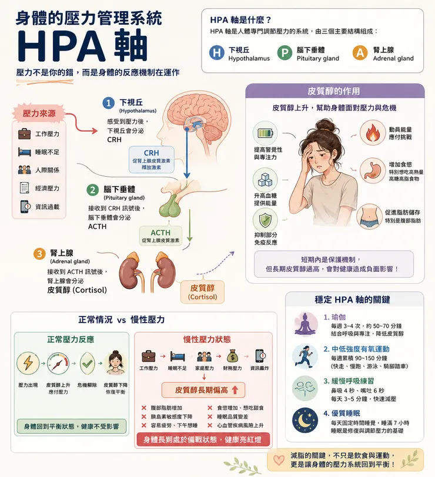

關於健康和體態，雞爸爸搜尋了許多科普或實用的資料，其中有許多受限於影片形式，不適合在辦公室裡觀看。因此重新整理成健康和體態系列的筆記本。第一篇筆記來討論：少吃多動卻卡關，當心你的壓力賀爾蒙。
你的意志力 就是種慢性壓力
你有沒有類似經驗？明明控制了飲食、規律運動，但到了固定體重後，卻是八風吹不動。每天早上起床就覺得累，下午三、四點肚子就開始咕咕叫，下班後只想癱在沙發上。忍不住想找零食、甜食或鹽酥雞。
你以為是意志力不夠，事實卻恰恰相反。你的身體，正在被「慢性壓力」綁架。
認識壓力賀爾蒙－皮質醇
近年研究發現，許多代謝問題背後，都有同一個共通因素——慢性壓力。而當壓力長期存在時，身體會不斷分泌壓力荷爾蒙「皮質醇」。
人類為了解決生存危機，在短時間內調動能量、增加體能、感官敏銳度，會透過下視丘、腦垂體、到腎上腺素，幫助我們保持警覺、提高專注力、調動能量應付危機。
但現代人面對的不只有短期壓力。
工作進度、家庭責任、經濟負擔、睡眠不足、社群媒體上的負面訊息……壓力就像便利商店，二十四小時都在。因此，身體不斷處於備戰狀態，導致皮質醇長期偏高。
結果就是：食慾增加、想吃高糖高油食物、胰島素敏感度下降、腹部脂肪更容易堆積、睡眠品質變差、疲勞感加重，形成一個惡性循環。
認識壓力總開關－HPA 軸
人體專門管理壓力的系統，稱為 HPA 軸。它由三個部分組成：
- 下視丘（Hypothalamus）
- 腦下垂體（Pituitary）
- 腎上腺（Adrenal）

當大腦感受到壓力時，這條軸線就會啟動，最後腎上腺分泌皮質醇，協助身體應對挑戰。正常情況下，當危機解除後，皮質醇會下降，身體重新恢復平衡。
但現代人的壓力往往沒有真正結束。於是 HPA 軸長期被刺激，皮質醇居高不下，代謝系統也跟著失衡。這也是許多人減脂卡關的重要原因。
科學證實有效的 4 個減壓方法
既然問題來自壓力，那麼改善壓力，就是改善代謝的起點。
1. 瑜珈是降低皮質醇效果最好的運動
許多人認為瑜珈只是伸展。但研究發現，它對降低壓力荷爾蒙的效果甚至優於許多運動形式。原因在於瑜珈同時結合：身體活動、呼吸控制、專注冥想，能有效啟動副交感神經，讓身體從戰鬥模式切換到修復模式。如果想獲得最佳效果：每週 3～4 次、每次約 50～70 分鐘、持續至少 12 週，就有機會明顯改善壓力狀態。
2. 中低強度有氧運動
很多人忽略了高強度運動本身也是一種壓力源，因此對於長期疲勞、壓力過大的人來說，過度訓練甚至讓皮質醇更高。相反地，中低強度有氧運動效果更理想。例如：快走、慢跑、騎腳踏車、游泳。每天約 20 分鐘，一週累積 140 分鐘左右，就能帶來不錯的效果。
3. 緩慢呼吸：最快速的減壓工具
如果瞬間壓力爆表，沒辦法運動怎麼辦？答案是呼吸。最簡單的方法：鼻吸 4 秒、嘴吐 6 秒，持續 3～5 分鐘。這種呼吸頻率能刺激副交感神經，提高心率變異度（HRV），讓身體更快從緊繃狀態恢復。成本幾乎是零，但效果卻可能超乎想像。
4. 睡眠：固定良好睡眠品質 才有正常的皮質醇節律
睡眠是所有減壓策略的基底。睡眠時間不足本身就是壓力來源，若睡眠品質下降，帶動的皮質醇上升，不但造成食慾增加，更讓內臟脂肪容易堆積、發炎反應增加。
固定睡眠時間也很重要，規律的作息，才能幫助身體維持正常的皮質醇節律。
不建議的方案－短暫放鬆不等於長期減壓
很多人下班後使用滑手機、追劇、刷短影音，覺得自己正在放鬆，但這些行為帶來的通常只是短暫的愉悅感。真正能改善壓力系統運作的，是上述那些需要主動投入的行為。
結語：減脂不是意志力的戰爭
過去我們以為自己輸給了嘴饞，現在才發現是輸給了壓力。當 HPA 軸失衡、皮質醇長期偏高時，身體會自動把你推向疲勞與脂肪囤積。如果你努力很久，體重卻始終沒有變化。該優化的，也許不只是飲食菜單。
因為真正的健康，不是靠意志力硬撐出來的。而是讓身體重新回到平衡之後，自然長出來的結果。
參考資料：【林勁緯 x 大腦優先教練學院】 壓力山大－肥胖隱形開關